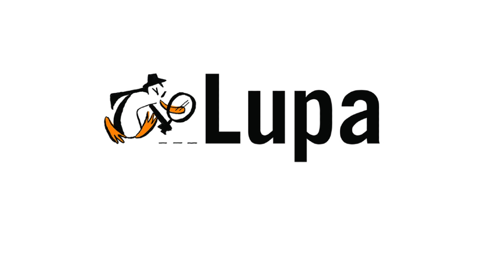
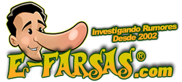

Sites para identificar possiceis Fake News
Agência Lupa
A Agência Lupa é primeira do setor de checagem de fatos do Brasil a ser criada no Brasil. Ela está ligada ao site Folha de São Paulo e seus trabalhos estão diretamente ligado a fatos compartilhados em período de eleição.
Fato ou Fake

Criado pelo grupo Globo, Fato ou Fake faz a apuração de notícias falsas com uma equipe composta por jornalistas que trabalham em veículos como Época, Extra, G1,CBN,Época,Extra, TV Globo, GloboNews, Jornal O Globo e Valor Econômico. Este site é responsável por verificar notícias muito compartilhadas de assuntos gerais
Agência Pública Truco

Fundada em 2011 por mulheres jornalistas, a Agência Pública é uma instituição sem fins lucrativos que avalia notícias com temas que envolvem administração pública e defesa dos direitos humanos. Ela é responsável por avaliar diversas falas de políticos, classificando-as em diversas categorias como verdadeiro, sem contexto, discutível, exagerado, subestimado, impossível provar ou falso.
E-Farsas
Lançado em 2001, o E-Farsas é um dos sites de checagem de notícias mais antigo que foi criado. O site é responsável por avaliar boatos que são espalhados diariamente pela internet. Após a avaliação, um post é feito para que as pessoas possam ter acesso ao conteúdo.
Fake Check

O detector de Fake News Fake Check é uma plataforma que foi criada pela junção de pesquisadores da Universidade de São Paulo (USP) e da Universidade Federal de São Carlos(UFSCar). Diferentemente de uma agência, a plataforma utiliza aprendizagem de máquina e inteligência artificial para avaliar se um texto é verdadeiro ou falso.